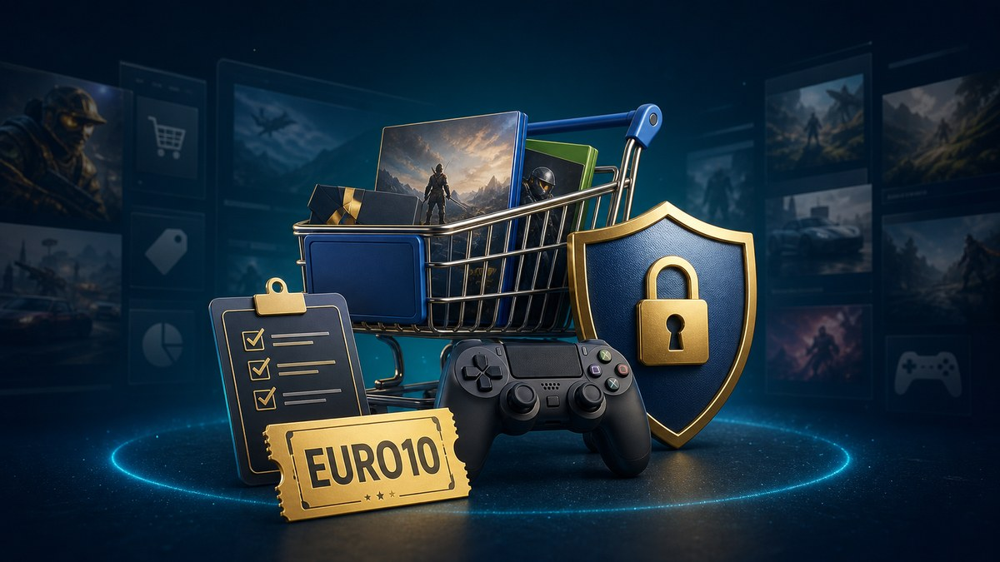

U7BUY, how does this work?
U7BUY is above all a marketplace. This means that price, time and quality of delivery often depend on an independent seller. The platform centralizes advertisements, payment, messaging and litigation, but two offers for the same product can present very different conditions.
The public catalogue includes reloads, objects, accounts, currencies, booster services, subscriptions and content related to Roblox. This width is convenient to compare, provided you never confuse abundance of choice with uniform guarantee.
The 7 controls to do before paying
- Read the title and all the description. Check the platform, region, duration, delivery mode and what is actually included.
- Compare multiple sellers. A small price difference can justify a better rated or more experienced seller.
- Watch history. Recent opinions, number of orders and detailed comments are more than an isolated note.
- Check the announced deadline. Fast delivery is not always instant.
- Read the rules of the publisher. A game or service may prohibit resale, account sharing, external currency or boosting.
- Stay on the platform. Refuse any payment or exchange moved to an external courier.
- Keep the evidence. Capture the ad, order and messages until the end of the warranty.
Test the EURO10 code
The code EURO10 Announcement 5 % additional on eligible orders. The amount actually displayed in the basket is true.
How to use the EURO10 code
Open U7BUY via the partner link, choose your offer, and enter EURO10 in the field of reduction before payment. Then check the total, currency and any expenses. If the basket does not show the expected drop, do not assume that it will be applied later: return to the previous step or choose another ad.
Delivery and confirmation of receipt
Depending on the product, delivery may involve a direct reload, a code, an exchange in the game, a transfer or sending ID. Test immediately what has been delivered. Do not confirm receipt until the product is complete, functional and in accordance with the description.
For an account, replace recovery information when permitted and activate the available security. Keep in mind, however, that a resold account may remain recoverable by a third party and the publisher may suspend it.
Trade Protect and litigation
The buyer protection documentation indicates coverage in certain cases of non-delivery or non-compliant product. The time limits, exclusions and evidence requested vary. Open a dispute since the order as soon as a problem is found, with legible catches and a short timeline.
U7BUY is suitable for buyers ready to compare ads and check product rules. For a more serene transaction, choose an established seller, a precise description and a delivery that you understand each step.
Frequently asked questions
Does EURO10 work on all orders?
No, the announced rebate depends on the visible eligibility of the basket. Check the total before paying.
When can I confirm the reception?
Only after testing the product and checking that it corresponds exactly to the ad.
What if a seller requests an external payment?
Refuse and stay in the payment and messaging of the platform to keep track.
Is a gaming purchase still allowed?
No. See the conditions of the publisher: some transactions or methods may result in a sanction.
Sources
Catalog U7BUY, documentation Trade Protect and Promise of repayment, accessed July 24, 2026.